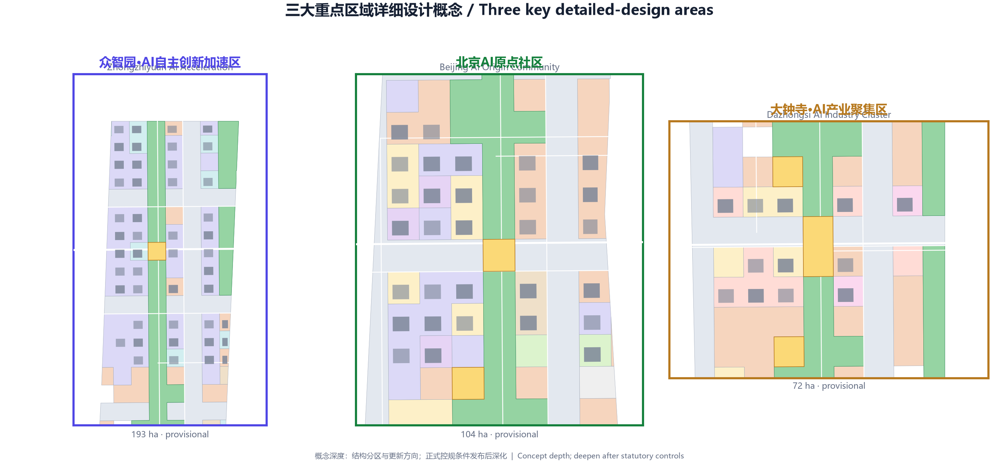
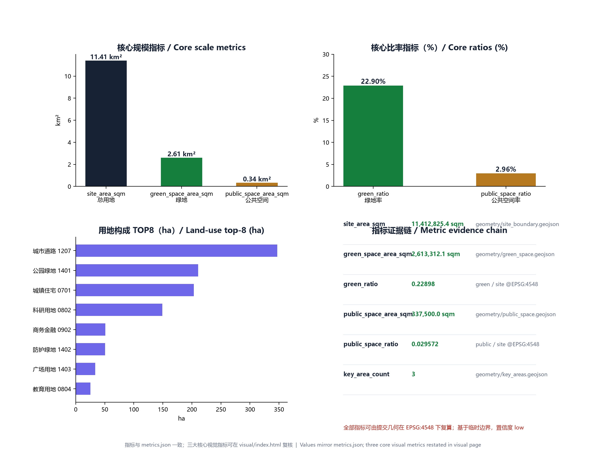

AI Life · AI Creation · AI Axis — Centennial Jing-Zhang AI Innovation Belt Concept Plan
This submission proposes a north-south 'AI Axis' along the Jing-Zhang railway heritage green spine, linking three key districts—Zhongzhiyuan AI Acceleration, Beijing AI Origin Community, and Dazhongsi AI Industry Cluster—and ten verifiable AI+ scenarios, delivered as a complete professional design open-source package.
AI Life · AI Creation · AI Axis — Centennial Jing-Zhang AI Innovation Belt Concept Plan
Design Basis and Source List
This plan is prepared using the open-call file set released by open-city-ai/haidian for the Centennial Jing-Zhang AI Innovation Belt. Key sources include the three-level scope and eleven tasks in design_brief.json, the six agent tasks and ten co-creation principles in agent_taskbook.json, and the editable/locked layer definitions in allowed_design_space.json Source. Because official road redlines, ownership, municipal capacity, and heritage controls are not fully published, this concept design uses the provisional boundary provisional_boundaries.geojson supplied by the repository, and all area and ratio metrics are flagged as provisional with confidence=low Spatial data.
On the standards side, the submission is cross-checked against the six standards listed in standards.json, including the Urban Design Administration Measures, Regulatory Detailed Planning Rules, and the land-use classification guide Standard. Land-use codes follow the repository enum brief/site-package/enums/land_use_codes.json to remain comparable with official classifications Source.
Three-Level Scope Framework
The plan mirrors the open-call taskbook: the coordinated research area is about 43.6 km², the overall design area is about 11.4 km², and the key-area detailed design covers about 3.7 km² Metric. In geometry/site_boundary.geojson, the provisional boundary PROV-SITE-001 projects to roughly 11.41 km² Metric, while the three key areas PROV-KEY-001/002/003 correspond to Zhongzhiyuan, Beijing AI Origin Community, and Dazhongsi Spatial data.
Methodologically, the coordinated research area answers the role of the AI Belt in the global innovation network; the overall design area answers how 11.4 km² can host AI life, creation, and the axis; and the key-area scale answers how the three districts can be detailed Depth. All ranges are distinguished in GeoJSON by geometry_role and official_boundary, so they can be recalculated quickly once official statutory boundaries are released Spatial data.
Coordinated Research Area: Industry and Future City Research
The Jing-Zhang railway was the first trunk railway designed and built by China. It links Qinghe in the north to Xizhimen in the south, and is surrounded by Tsinghua, Peking University, CAS institutes, and leading tech firms Source. This plan proposes the narrative "Centennial Jing-Zhang AI (Love) Innovation Belt": the industrial-heritage linear space is converted into the AI-era "urban innovation spine," and the homophone "love" emphasizes that the spine serves human emotion, creativity, and daily life.
Industry research focuses on the AI innovation chain: source innovation, engineering, productization, scenario validation, and global dissemination. Within the coordinated research area, the north relies on Qinghe and Shangdi for large-model training, compute, and national platforms; the middle relies on universities for open-source communities, technology transfer, and talent housing; and the south relies on the Dazhongsi commercial district for AI consumption, agent commerce, and city-level scenario launches Source. Five to eight global cases are translated into local design strategies: Silicon Valley's innovation corridor for density and mixing, London King's Cross for railway-heritage revitalization, Seoul Digital Media City for content-industry and public-space integration, Singapore Punggol for integrated work-live-learn districts, and Montreal Mile-Ex for converting old industrial buildings into AI studios Source.
Overall Design Area: Urban Renewal and Regulatory-Plan-Level Urban Design
The overall design takes the Jing-Zhang railway heritage green spine as the north-south "AI Axis" and builds a spatial structure of "three districts, two wings, one belt, and multiple nodes." From north to south the three districts are: AI Creation (Zhongzhiyuan), AI Axis (Beijing AI Origin Community), and AI Life (Dazhongsi). The two wings extend east and west to connect the university research belt and the traditional residential-commercial belt, forming a closed loop from source innovation to axis transformation to life services Depth.

The land-use structure is given in geometry/land_use.geojson and covers 14 codes including R&D, residential, commercial, business, culture, education, healthcare, roads, green space, and plazas without overlap and without gaps Spatial data. Green and open-space land totals about 261 hectares, giving a green ratio of 22.898% Metric. Public space (plaza land 1403) is about 3.38 hectares, giving a public-space ratio of 2.957% Metric. Building footprints total about 104 hectares after union de-duplication, building density is about 9.13%, and total floor area is about 11.73 million m² Metric. Road land accounts for about 30.4%, structured as arterials, collectors, slow-mobility loops, green-spine greenways, and transit feeds Spatial data.
At regulatory-plan depth, this stage provides land-use boundaries, leading functions, building-renewal directions, intended intensity, and height zoning. Plot-level index assignment will follow once official redlines, capacity, and ownership are clear Depth.
Detailed Design of Key Areas
Zhongzhiyuan AI Innovation Acceleration Area
Zhongzhiyuan lies in the north of the site with a provisional area of about 1.93 km², carrying the "AI Creation" theme Metric. It is positioned as a garden-style innovation district. It preserves industrial relics and low-density R&D buildings along Qinghe, and inserts national AI platforms, open-source labs, and model-evaluation centers. Spatial strategies include the Open-Source Release Hall and Urban Agent Sandbox along the green spine, and the University-Industry Transfer Living Room along east-west lanes Depth. Building renewal is mainly retention and adaptive reuse; a few inefficient factories are demolished for low-rise R&D courtyards. Heights are mostly 24–45 m, with key nodes up to 60 m Standard.
Beijing AI Origin Community
The Beijing AI Origin Community is in the middle of the site with a provisional area of about 1.04 km², forming the core anchor of the "AI Axis" Spatial data. It is positioned as a campus-adjacent transformation quarter that carries the conversion from papers and open-source code to prototype products. The spatial structure uses the Jing-Zhang green spine and a rail station as dual axes. Around the station a TOD mixed-use block integrates R&D, housing, commerce, culture, and plaza. The AI Origin Plaza is one of three "AI pilgrimage landmarks," hosting model releases, developer festivals, and public exhibitions Depth.
Dazhongsi AI Industry Cluster
The Dazhongsi district is in the south with a provisional area of about 0.72 km², carrying the "AI Life" theme Spatial data. It is positioned as an urban intelligent-economy quarter that renews the traditional commercial district with agent stores, AI content consumption, data-asset exhibition, and AI talent apartments. Strategies include four-quadrant connectivity at intersections, a three-dimensional pedestrian network, green-space composite use, and a nighttime-economy vitality corridor. Dazhongsi Plaza is the second AI pilgrimage landmark, creating a cultural dialogue between the ancient bell tower and the new compute era Source.

AI Innovation Ecosystem, Personas, and AI+ Scenarios
The plan builds service scenarios around three personas. The first is "lab innovators"—university faculty, students, and researchers—who need quiet R&D space, fast technology-transfer channels, and low-cost prototype testing grounds. The second is "engineering entrepreneurs"—startups and tech firms—who need flexible offices, compute access, capital connections, and scenario validation. The third is "urban residents"—residents, commuters, and consumers—who need safe, convenient, AI-assisted daily services Source.
The ten AI+ scenario cards are: 01 Open-Source Release Hall, 02 Urban Agent Sandbox, 03 Slow-Mobility Breakpoint Diagnosis, 04 Talent Life Concierge, 05 AI Safety Governance Gallery, 06 University-Industry Transfer Living Room, 07 Data-Asset Theater, 08 Low-Carbon Compute Station, 09 Jing-Zhang Memory Route, and 10 Global AI Activity Week Route. Each scenario specifies users, spatial location, data sources, privacy boundaries, human-review nodes, and potential operators. For example, the Urban Agent Sandbox is located at green-spine and plaza nodes, uses only public cameras and simulated data, and requires human review for key decisions Source.
In addition, three AI pilgrimage landmarks are proposed: AI Origin Plaza, Dazhongsi AI Plaza, and the Open-Source Release Hall on the green spine. They are spatial anchors as well as AI cultural narrative and global dissemination nodes Depth.
Land Use, Building Scale, and Retain-Renovate-Demolish Strategy
Land-use zoning and building renewal are fully submitted in geometry/land_use.geojson and geometry/buildings.geojson. R&D land (0802) is about 149 hectares, or 13.1% of the overall design area, forming the core carrier of innovation functions. Residential land (0701) is about 203 hectares to support talent communities and jobs-housing balance. Commercial and business land (0901/0902) is about 67 hectares to support life and industry services. Green and open-space land (14 series) is about 295 hectares Spatial data.
Building-renewal strategy is divided into four types: retain, renovate, demolish, and build new. Good-quality buildings with compatible functions are retained; structurally sound but functionally mismatched buildings are renovated and repurposed; inefficient, unsafe, or public-space-blocking buildings are demolished; and key nodes in the key areas are built new. Renewal actions are tagged in geometry/buildings.geojson by renewal_action_concept, with 315 building footprints in total; the union of footprints is about 104 hectares Metric Depth.

Transport, Rail, Municipal Infrastructure, and Public Services
The transport system proposes a slow-mobility-first structure of "one spine, one loop, many lanes, and many feeds." The spine is the Jing-Zhang greenway running north-south; the loop connects the three districts; the lanes are local streets at roughly 150 m spacing for block permeability; and the feeds are walking connections from rail stations and micro-transit hubs Spatial data. Arterials preserve the existing skeleton, while local streets are controlled to 12–20 m width, prioritizing walking, cycling, and microcirculation Standard.

Around rail stations and micro-hubs, TOD compact development is encouraged within a 500 m walking radius, with mixed land use and higher-intensity renewal. Parking is mainly accessory and shared, with public parking and drop-off bays to avoid large surface lots fragmenting blocks Depth.
Municipal and public-service facilities are proposed as "distributed low-carbon compute stations" because official municipal capacity, utility tunnels, and facility points are not yet complete. These small buildings or landscape structures integrate edge compute, energy microgrids, restrooms, and emergency facilities along the green spine and plaza nodes. They must be rechecked after official municipal planning is released [assumption:assumptions.json].
Blue-Green Network, Public Space, and Urban Character
The blue-green system centers on the Jing-Zhang railway heritage green spine, extending north to the Qinghe waterfront and south into the Dazhongsi urban park. The spine width is about 190 m, divided into a main greenway, rain gardens, community gardens, and flexible event lawns Spatial data. Public space consists of plaza land 1403, totaling 3.38 hectares, located at AI Origin, Dazhongsi, Zhongzhiyuan entrances, and transit micro-hubs Spatial data.
Urban character follows the theme of "industrial heritage × AI future." The green spine preserves clues such as rails, switches, and signals, and covers them with light reversible modern structures. Buildings in key areas are mainly modern and restrained, with local landmarks allowed tech-forward forms. Night lighting prioritizes low-color-temperature functional lighting, with dynamic light art at landmark nodes Standard.
Renewal Projects, Implementation Policy, and Phasing
Implementation is divided into three phases. The near term starts from the Beijing AI Origin Community, leveraging universities and the rail station to build AI Origin Plaza, the University-Industry Transfer Living Room, and talent apartments, quickly forming an innovation atmosphere Spatial data. The medium term pushes north to Zhongzhiyuan, building the Open-Source Release Hall, Urban Agent Sandbox, and national-platform park, forming the "AI Creation" engine Spatial data. The long term completes the Dazhongsi AI Industry Cluster in the south, driving full intelligent renewal of the traditional commercial district to create an "AI Life" model Spatial data.
Implementation policies include: a dual positive/negative list for AI scenarios; flexible zoning that allows R&D land to mix commerce and housing; a Centennial Jing-Zhang AI Innovation Belt urban-renewal fund; a government-enterprise-university district coordination platform; and inclusion of green-spine industrial heritage in a combined urban-renewal and cultural-protection list Source.
Metrics, Area Recalculation, and Compliance Matrix
The three core visual metrics of this package are site_area_sqm=11412825.386, green_ratio=0.22898, and public_space_ratio=0.029572 Metric Metric Metric. All three can be recalculated from submitted geometry in EPSG:4548 and are published on visual/index.html through data-value attributes. The full metric structure is in metrics.json, where each metric records status, value, unit, source_files, formula, confidence, and assumptions Spatial data.

The compliance_matrix.json covers 23 requirements from announcement sections 1.3, 1.4, 1.5 and agent.1–agent.6; standard_matrix.json covers six professional standards; and design_depth_matrix.json covers fifteen depth nodes Spatial data Spatial data Spatial data.
Risk, Copyright, and Compliance
Key risks include: mismatch between official and provisional redlines requiring recalculation; insufficient municipal capacity affecting high-intensity renewal; heritage and character controls limiting some building retrofits; data privacy and algorithmic explainability of AI scenarios requiring special review; and market volatility affecting long-term phasing. These risks are listed in assumptions.json, and targeted studies are recommended in later stages [assumption:assumptions.json].
Copyright: the submission text, code, geometry, and graphics are released under license: CC-BY-4.0; generative-model assistance is declared in agent.json. Fonts, symbols, and colors in images and PDFs are open-source or self-drawn and do not depend on externally copyrighted fonts Source.
References
Core references include: brief/site-package/design_brief.json, brief/site-package/agent_taskbook.json, brief/site-package/allowed_design_space.json, brief/site-package/geometry/provisional_boundaries.geojson, brief/site-package/sources.json, data/source_registry.json, the schema files, standards/standards.json, templates/proposal.md, and the skill documentation skills/urban-design-ai-submission/SKILL.md Source Source Source.
All data references in this proposal can be verified against the JSON, GeoJSON, and HTML files in the submission package; provisional-boundary conclusions will be updated when official data is released. The detailed iteration log is in changelog.md (this is the first submission, v1.0.0).